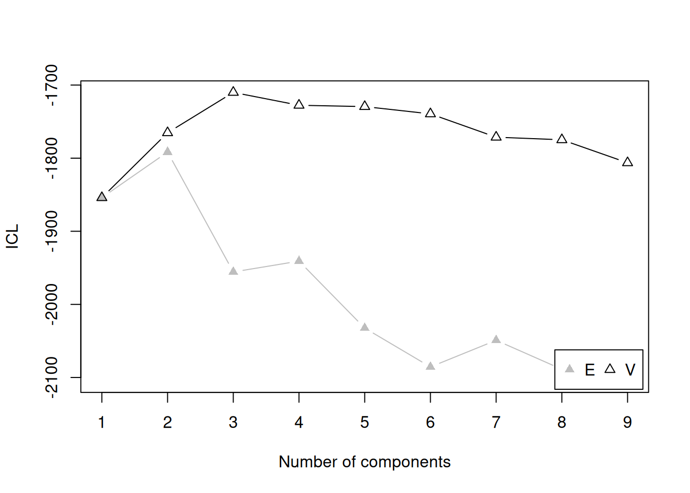
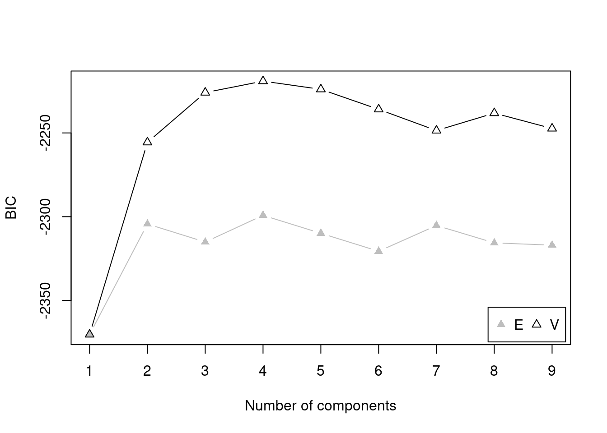
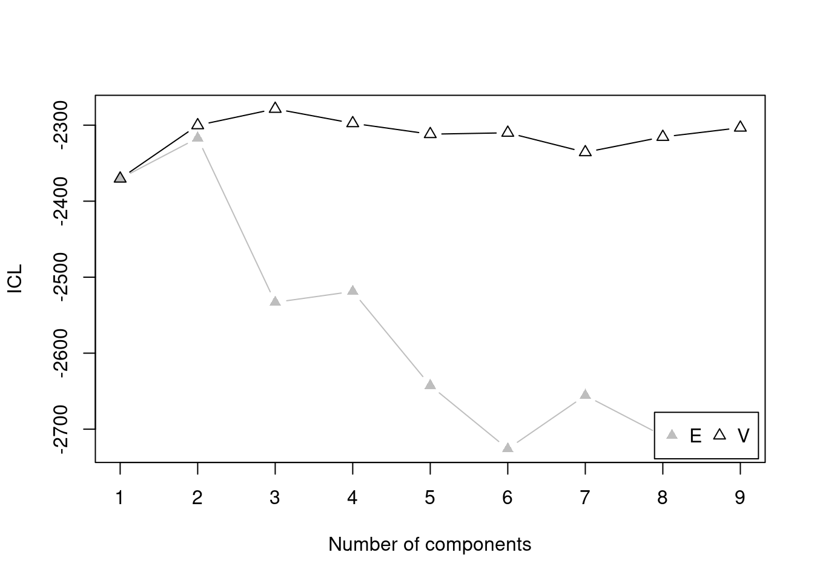

I want your feedback to make the book better for you and other readers. If you find typos, errors, or places where the text may be improved, please let me know. The best ways to provide feedback are by GitHub or hypothes.is annotations.
Opening an issue or submitting a pull request on GitHub: https://github.com/isaactpetersen/Fantasy-Football-Analytics-Textbook
Adding an annotation using hypothes.is.
To add an annotation, select some text and then click the
symbol on the pop-up menu.
To see the annotations of others, click the
symbol in the upper right-hand corner of the page.
19 Cluster Analysis
19.1 Getting Started
19.1.1 Load Packages
19.1.2 Load Data
19.1.3 Overview
19.1.4 Example: Tiers of Prior Season Fantasy Points
19.1.4.1 Prepare Data
[1] 2023Code
player_stats_seasonal_offense_recent <- player_stats_seasonal_offense %>%
filter(season == recentSeason)
player_stats_seasonal_offense_recentQB <- player_stats_seasonal_offense_recent %>%
filter(position_group == "QB")
player_stats_seasonal_offense_recentRB <- player_stats_seasonal_offense_recent %>%
filter(position_group == "RB")
player_stats_seasonal_offense_recentWR <- player_stats_seasonal_offense_recent %>%
filter(position_group == "WR")
player_stats_seasonal_offense_recentTE <- player_stats_seasonal_offense_recent %>%
filter(position_group == "TE")19.1.4.2 Identify the Optimal Number of Tiers by Position
19.1.4.2.1 Quarterbacks
Code
Bayesian Information Criterion (BIC):
E V
1 -1041.608 -1041.6083
2 -1011.211 -981.3807
3 -1020.064 -976.7085
4 -1019.868 -967.0940
5 -1028.722 -974.8329
6 -1022.923 -985.8486
7 -1030.011 -979.9619
8 -1038.832 -992.4342
9 -1047.732 -1002.1813
Top 3 models based on the BIC criterion:
V,4 V,5 V,3
-967.0940 -974.8329 -976.7085 Best BIC values:
V,4 V,5 V,3
BIC -967.094 -974.832919 -976.708516
BIC diff 0.000 -7.738876 -9.614473
Code
Integrated Complete-data Likelihood (ICL) criterion:
E V
1 -1041.608 -1041.6083
2 -1014.442 -987.7530
3 -1103.979 -989.1155
4 -1102.742 -980.2298
5 -1149.469 -987.2057
6 -1122.335 -998.1376
7 -1128.146 -990.3105
8 -1147.378 -1006.0387
9 -1172.998 -1019.5459
Top 3 models based on the ICL criterion:
V,4 V,5 V,2
-980.2298 -987.2057 -987.7530 Best ICL values:
V,4 V,5 V,2
ICL -980.2298 -987.205656 -987.752971
ICL diff 0.0000 -6.975822 -7.523137
Code
-------------------------------------------------------------
Bootstrap sequential LRT for the number of mixture components
-------------------------------------------------------------
Model = V
Replications = 999
LRTS bootstrap p-value
1 vs 2 73.484155 0.001
2 vs 3 17.928674 0.005
3 vs 4 22.870995 0.001
4 vs 5 5.517646 0.229
19.1.4.2.2 Running Backs
Code
Bayesian Information Criterion (BIC):
E V
1 -1721.012 -1721.012
2 -1664.673 -1596.519
3 -1674.688 -1559.835
4 -1684.702 -1562.777
5 -1678.476 -1562.212
6 -1688.478 NA
7 -1694.344 NA
8 -1704.351 NA
9 -1714.393 -1614.038
Top 3 models based on the BIC criterion:
V,3 V,5 V,4
-1559.835 -1562.212 -1562.777 Best BIC values:
V,3 V,5 V,4
BIC -1559.835 -1562.211682 -1562.776909
BIC diff 0.000 -2.376539 -2.941765
Code
Integrated Complete-data Likelihood (ICL) criterion:
E V
1 -1721.012 -1721.012
2 -1670.491 -1617.112
3 -1825.647 -1585.838
4 -1889.919 -1609.826
5 -1915.554 -1595.334
6 -1974.819 NA
7 -1955.175 NA
8 -1997.059 NA
9 -2042.572 -1680.602
Top 3 models based on the ICL criterion:
V,3 V,5 V,4
-1585.838 -1595.334 -1609.826 Best ICL values:
V,3 V,5 V,4
ICL -1585.838 -1595.333586 -1609.82628
ICL diff 0.000 -9.495921 -23.98861
Code
numTiersRB <- 3
# The following code errors out:
#tiersRB_boostrap <- mclustBootstrapLRT(
# player_stats_seasonal_offense_recentRB$fantasy_points,
# modelName = "V") # variable/unequal variance (for univariate data)
#
#numTiersRB <- as.numeric(summary(tiersRB_boostrap)[,"Length"][1]) # or could specify the number of teams manually
#
#tiersRB_boostrap
#plot(
# tiersRB_boostrap,
# G = numTiersRB - 1)19.1.4.2.3 Wide Receivers
Code
Bayesian Information Criterion (BIC):
E V
1 -2359.423 -2359.423
2 -2294.123 -2246.031
3 -2304.883 -2218.767
4 -2289.024 -2212.087
5 -2299.748 -2217.481
6 -2310.471 -2229.349
7 -2295.464 -2241.987
8 -2305.913 -2250.518
9 -2307.266 -2263.611
Top 3 models based on the BIC criterion:
V,4 V,5 V,3
-2212.087 -2217.481 -2218.767 Best BIC values:
V,4 V,5 V,3
BIC -2212.087 -2217.481286 -2218.767066
BIC diff 0.000 -5.394631 -6.680411
Code
Integrated Complete-data Likelihood (ICL) criterion:
E V
1 -2359.423 -2359.423
2 -2306.716 -2290.373
3 -2522.025 -2271.769
4 -2504.445 -2290.328
5 -2644.401 -2305.237
6 -2720.682 -2303.030
7 -2651.552 -2328.981
8 -2683.275 -2332.765
9 -2699.311 -2335.818
Top 3 models based on the ICL criterion:
V,3 V,4 V,2
-2271.769 -2290.328 -2290.373 Best ICL values:
V,3 V,4 V,2
ICL -2271.769 -2290.32774 -2290.3726
ICL diff 0.000 -18.55903 -18.6039Code
-------------------------------------------------------------
Bootstrap sequential LRT for the number of mixture components
-------------------------------------------------------------
Model = V
Replications = 999
LRTS bootstrap p-value
1 vs 2 129.47603 0.001
2 vs 3 43.34742 0.001
3 vs 4 22.76429 0.001
4 vs 5 10.68925 0.029
5 vs 6 4.21577 0.238
19.1.4.2.4 Tight Ends
Code
Bayesian Information Criterion (BIC):
E V
1 -1191.234 -1191.234
2 -1154.104 -1123.349
3 -1163.614 -1105.110
4 -1173.135 -1107.427
5 -1162.852 -1116.659
6 -1172.360 -1125.435
7 -1166.107 -1136.896
8 -1175.610 -1144.981
9 -1172.515 -1157.098
Top 3 models based on the BIC criterion:
V,3 V,4 V,5
-1105.110 -1107.427 -1116.659 Best BIC values:
V,3 V,4 V,5
BIC -1105.11 -1107.427151 -1116.65944
BIC diff 0.00 -2.317554 -11.54984
Code
Integrated Complete-data Likelihood (ICL) criterion:
E V
1 -1191.234 -1191.234
2 -1159.663 -1146.435
3 -1292.566 -1136.471
4 -1375.784 -1153.849
5 -1349.189 -1159.467
6 -1403.580 -1159.801
7 -1368.315 -1178.065
8 -1406.376 -1169.766
9 -1401.273 -1175.813
Top 3 models based on the ICL criterion:
V,3 V,2 V,4
-1136.471 -1146.435 -1153.849 Best ICL values:
V,3 V,2 V,4
ICL -1136.471 -1146.435247 -1153.849
ICL diff 0.000 -9.963956 -17.378Code
-------------------------------------------------------------
Bootstrap sequential LRT for the number of mixture components
-------------------------------------------------------------
Model = V
Replications = 999
LRTS bootstrap p-value
1 vs 2 82.145958 0.001
2 vs 3 32.500344 0.001
3 vs 4 11.943217 0.023
4 vs 5 5.028484 0.274
19.1.4.3 Fit the Cluster Model to the Optimal Number of Tiers
19.1.4.3.1 Quarterbacks
In our data, all of the following models are equivalent—i.e., they result in the same unequal variance model with a 4-cluster solution—but they arrive there in different ways.
Code
Mclust(
data = player_stats_seasonal_offense_recentQB$fantasy_points,
G = numTiersQB,
)
Mclust(
data = player_stats_seasonal_offense_recentQB$fantasy_points,
G = 4,
)
Mclust(
data = player_stats_seasonal_offense_recentQB$fantasy_points,
)
Mclust(
data = player_stats_seasonal_offense_recentQB$fantasy_points,
x = tiersQB_bic
)Let’s fit one of these:
Here are the number of players that are in each of the four clusters (i.e., tiers):
19.1.4.3.2 Running Backs
Here are the number of players that are in each of the four clusters (i.e., tiers):
19.1.4.3.3 Wide Receivers
Here are the number of players that are in each of the four clusters (i.e., tiers):
19.1.4.3.4 Tight Ends
Here are the number of players that are in each of the four clusters (i.e., tiers):
19.1.4.4 Plot the Tiers
We can merge the player’s classification into the dataset and plot each player’s classification.
19.1.4.4.1 Quarterbacks
Code
player_stats_seasonal_offense_recentQB$tier <- clusterModelQBs$classification
player_stats_seasonal_offense_recentQB <- player_stats_seasonal_offense_recentQB %>%
mutate(
tier = factor(case_match( # recode so 1 is highest tier
tier,
1 ~ 4,
2 ~ 3,
3 ~ 2,
4 ~ 1)))
player_stats_seasonal_offense_recentQB$position_rank <- rank(
player_stats_seasonal_offense_recentQB$fantasy_points * -1,
na.last = "keep",
ties.method = "min")
plot_qbTiers <- ggplot2::ggplot(
data = player_stats_seasonal_offense_recentQB,
mapping = aes(
x = fantasy_points,
y = position_rank,
color = tier
)) +
geom_point(
aes(
text = player_display_name # add player name for mouse over tooltip
)) +
scale_y_continuous(trans = "reverse") +
coord_cartesian(clip = "off") +
labs(
x = "Projected Points",
y = "Position Rank",
title = "Quarterback Fantasy Points by Tier",
color = "Tier") +
theme_classic() +
theme(legend.position = "top")
ggplotly(plot_qbTiers)19.1.4.4.2 Running Backs
Code
player_stats_seasonal_offense_recentRB$tier <- clusterModelRBs$classification
player_stats_seasonal_offense_recentRB <- player_stats_seasonal_offense_recentRB %>%
mutate(
tier = factor(case_match( # recode so 1 is highest tier
tier,
1 ~ 3,
2 ~ 2,
3 ~ 1)))
player_stats_seasonal_offense_recentRB$position_rank <- rank(
player_stats_seasonal_offense_recentRB$fantasy_points * -1,
na.last = "keep",
ties.method = "min")
plot_rbTiers <- ggplot2::ggplot(
data = player_stats_seasonal_offense_recentRB,
mapping = aes(
x = fantasy_points,
y = position_rank,
color = tier
)) +
geom_point(
aes(
text = player_display_name # add player name for mouse over tooltip
)) +
scale_y_continuous(trans = "reverse") +
coord_cartesian(clip = "off") +
labs(
x = "Projected Points",
y = "Position Rank",
title = "Running Back Fantasy Points by Tier",
color = "Tier") +
theme_classic() +
theme(legend.position = "top")
ggplotly(plot_rbTiers)19.1.4.4.3 Wide Receivers
Code
player_stats_seasonal_offense_recentWR$tier <- clusterModelWRs$classification
player_stats_seasonal_offense_recentWR <- player_stats_seasonal_offense_recentWR %>%
mutate(
tier = factor(case_match( # recode so 1 is highest tier
tier,
1 ~ 5,
2 ~ 4,
3 ~ 3,
4 ~ 2,
5 ~ 1)))
player_stats_seasonal_offense_recentWR$position_rank <- rank(
player_stats_seasonal_offense_recentWR$fantasy_points * -1,
na.last = "keep",
ties.method = "min")
plot_wrTiers <- ggplot2::ggplot(
data = player_stats_seasonal_offense_recentWR,
mapping = aes(
x = fantasy_points,
y = position_rank,
color = tier
)) +
geom_point(
aes(
text = player_display_name # add player name for mouse over tooltip
)) +
scale_y_continuous(trans = "reverse") +
coord_cartesian(clip = "off") +
labs(
x = "Projected Points",
y = "Position Rank",
title = "Wide Receiver Fantasy Points by Tier",
color = "Tier") +
theme_classic() +
theme(legend.position = "top")
ggplotly(plot_wrTiers)19.1.4.4.4 Tight Ends
Code
player_stats_seasonal_offense_recentTE$tier <- clusterModelTEs$classification
player_stats_seasonal_offense_recentTE <- player_stats_seasonal_offense_recentTE %>%
mutate(
tier = factor(case_match( # recode so 1 is highest tier
tier,
1 ~ 4,
2 ~ 3,
3 ~ 2,
4 ~ 1)))
player_stats_seasonal_offense_recentTE$position_rank <- rank(
player_stats_seasonal_offense_recentTE$fantasy_points * -1,
na.last = "keep",
ties.method = "min")
plot_teTiers <- ggplot2::ggplot(
data = player_stats_seasonal_offense_recentTE,
mapping = aes(
x = fantasy_points,
y = position_rank,
color = tier
)) +
geom_point(
aes(
text = player_display_name # add player name for mouse over tooltip
)) +
scale_y_continuous(trans = "reverse") +
coord_cartesian(clip = "off") +
labs(
x = "Projected Points",
y = "Position Rank",
title = "Tight End Fantasy Points by Tier",
color = "Tier") +
theme_classic() +
theme(legend.position = "top")
ggplotly(plot_teTiers)19.2 Conclusion
19.3 Session Info
R version 4.4.1 (2024-06-14)
Platform: x86_64-pc-linux-gnu
Running under: Ubuntu 22.04.4 LTS
Matrix products: default
BLAS: /usr/lib/x86_64-linux-gnu/openblas-pthread/libblas.so.3
LAPACK: /usr/lib/x86_64-linux-gnu/openblas-pthread/libopenblasp-r0.3.20.so; LAPACK version 3.10.0
locale:
[1] LC_CTYPE=C.UTF-8 LC_NUMERIC=C LC_TIME=C.UTF-8
[4] LC_COLLATE=C.UTF-8 LC_MONETARY=C.UTF-8 LC_MESSAGES=C.UTF-8
[7] LC_PAPER=C.UTF-8 LC_NAME=C LC_ADDRESS=C
[10] LC_TELEPHONE=C LC_MEASUREMENT=C.UTF-8 LC_IDENTIFICATION=C
time zone: UTC
tzcode source: system (glibc)
attached base packages:
[1] stats graphics grDevices utils datasets methods base
other attached packages:
[1] plotly_4.10.4 lubridate_1.9.3 forcats_1.0.0 stringr_1.5.1
[5] dplyr_1.1.4 purrr_1.0.2 readr_2.1.5 tidyr_1.3.1
[9] tibble_3.2.1 ggplot2_3.5.1 tidyverse_2.0.0 mclust_6.1.1
loaded via a namespace (and not attached):
[1] gtable_0.3.5 jsonlite_1.8.8 compiler_4.4.1 tidyselect_1.2.1
[5] scales_1.3.0 yaml_2.3.10 fastmap_1.2.0 R6_2.5.1
[9] labeling_0.4.3 generics_0.1.3 knitr_1.48 htmlwidgets_1.6.4
[13] munsell_0.5.1 pillar_1.9.0 tzdb_0.4.0 rlang_1.1.4
[17] utf8_1.2.4 stringi_1.8.4 xfun_0.46 lazyeval_0.2.2
[21] viridisLite_0.4.2 timechange_0.3.0 cli_3.6.3 withr_3.0.0
[25] magrittr_2.0.3 crosstalk_1.2.1 digest_0.6.36 grid_4.4.1
[29] hms_1.1.3 lifecycle_1.0.4 vctrs_0.6.5 data.table_1.15.4
[33] evaluate_0.24.0 glue_1.7.0 farver_2.1.2 fansi_1.0.6
[37] colorspace_2.1-1 httr_1.4.7 rmarkdown_2.27 tools_4.4.1
[41] pkgconfig_2.0.3 htmltools_0.5.8.1